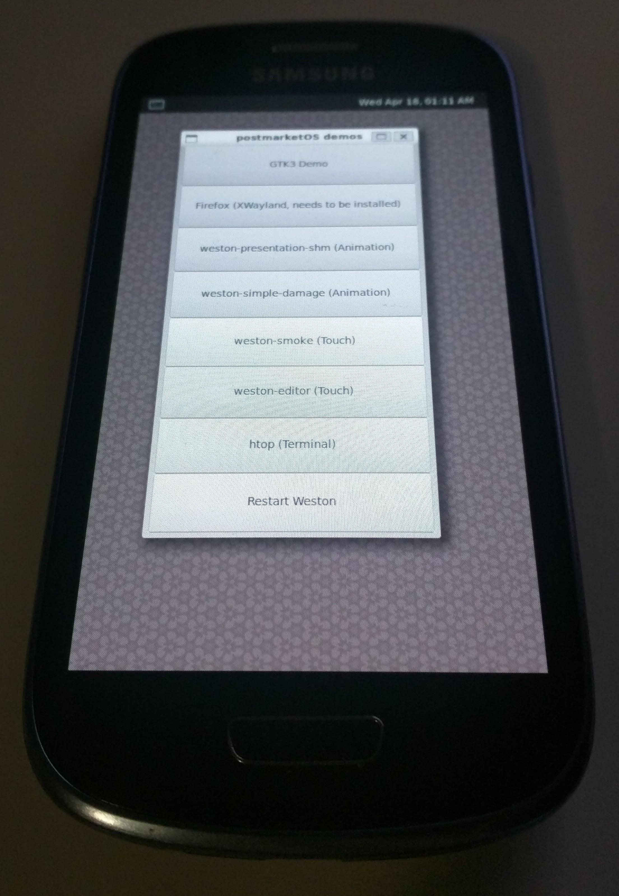

Samsung Galaxy S III mini (samsung-golden)
|
 Samsung Galaxy SIII mini GT-I8190 | |
| Manufacturer | Samsung |
|---|---|
| Name | Galaxy S III mini GT-I8190 |
| Codename | samsung-golden |
| Released | 2012 |
| Category | testing |
| Original software | Android 4.1.1 (Jelly Bean), upgradable to Android 4.1.2 (Jelly Bean) |
| Hardware | |
| Chipset | ST-Ericsson NovaThor U8500 |
| CPU | 1 GHz dual-core Cortex-A9 |
| GPU | Mali-400 MP1 |
| Display | 480x800 AMOLED |
| Storage | 8 GB |
| Memory | 1 GB |
| Architecture | armv7 |
{kind=link}
| USB Networking |
Works
|
|---|---|
| Flashing |
Works
|
| Touchscreen |
Works
|
| Display |
Works
|
| WiFi |
Works
|
| FDE |
Works
|
| Mainline |
Works
|
| Battery |
Works
|
| 3D Acceleration |
Works
|
| Audio |
Broken
|
| Bluetooth |
Partial
|
| Camera |
Broken
|
| GPS |
Broken
|
| Mobile data |
Broken
|
| SMS |
Broken
|
| Calls |
Broken
|
| USB OTG |
Partial
|
| NFC |
Unavailable
|
| Accelerometer |
Works
|
|---|---|
| Magnetometer |
Works
|
| Ambient Light |
Works
|
| Proximity |
Works
|
| Hall Effect |
Unavailable
|
| Barometer |
Unavailable
|
| Power Sensor |
Unavailable
|
| Camera Flash |
Works
|
|---|---|
| Keyboard |
Unavailable
|
| Touchpad |
Unavailable
|
| USB-A |
Unavailable
|
| HDMI/DP |
Unavailable
|
| Ir TX |
Unavailable
|
| Ir RX |
Unavailable
|
| Stylus |
Unavailable
|
| Haptics |
Works
|
| Ethernet |
Unavailable
|
| FOSS bootloader |
Works
|
| Primary Bootloader |
Broken
|
|---|---|
| Secondary Bootloader |
Works
|
| Mainline |
Works
|
| Internal Storage |
Works
|
| SD card | |
| USB Host |
Works
|
| USB Peripheral |
Works
|
| Display |
Works
|
| Keyboard |
Unavailable
|
| Buttons |
Works
|
|
This device is based on the ST-Ericsson U8500. See the SoC page for common tips, guides and troubleshooting steps |
Contributors
Maintainer(s)
Users owning this device
- Bastindo (Notes: I have several of these)
- Flutterbrony (Notes: Blue; u-boot working!)
- GeraltvonNVIDIA (Notes: Kernel 6.1.0 on Phosh)
- GtrxAC (Notes: dual boot pmOS and Android 4.1 custom ROM)
- Linusw
- Minecrell (Notes: GT-I8190)
- Nickre
- Poipa
- Santeri3700 (Notes: x1)
- Sonichero
- TPJS (Notes: 2x (one is running PMOS, one is unmodified))
- Ulville
- Zephyr1112 (Notes: 1/8GB, dead (no battery, dead mobo))
Installation
The mainline kernel can only be booted through U-Boot, not directly with the Samsung bootloader. U-Boot is installed as intermediate bootloader on the boot partition, so it does not replace the Samsung bootloader entirely. pmbootstrap can only support one bootloader configuration at the moment, which is why U-Boot is also recommended when installing the downstream kernel.
Boot into Download Mode using Power + Volume Down + Home and follow follow the the NovaThor U8500 U-Boot installation instructions to install U-Boot.
Finally, follow the Installation guide. You should install the rootfs to the SD-Card, because the internal Storage is pretty limited.
Mainline
Working (v5.18.0-rc1):
- Display including full brightness control
- GPU (Mali-400 MP using Lima)
- Touchscreen
- WiFi
- Bluetooth (partial - at least on my device scanning for other devices works but it keeps disconnecting when connecting to other devices; not sure why)
- IMU (Accelerometer + Gyroscope)
- USB
- Flashlight (turn on/off in Phosh drop down menu)
- Battery - charging and battery indicator works
Not working:
- Audio
- Camera
- Other
Bluetooth
Bluetooth does not have any Bluetooth device address (bdaddr or "MAC address") set after boot at the moment. To make Bluetooth work, you need to manually configure one:
# apk add bluez-btmgmt # btmgmt public-addr <bdaddr>
where <bdaddr> is a MAC address like 53:33:6d:69:6e:69.
The Bluetooth controller should then show up in bluetoothctl:
# apk add bluez # rc-service bluetooth start $ bluetoothctl
You can e.g scan for devices:
[bluetooth]# show [bluetooth]# power on [bluetooth]# advertise on [bluetooth]# system-alias golden [bluetooth]# scan on
Experience
Downstream: The best user interface to install is XFCE4. Other ones do lag, or just don't respond. Especially KDE Plasma.
Mainline: Plasma Mobile and Phosh should work okay.
DSI Scaling Error in Phosh
If you are running phosh, and the scaling is wrong so that you cannot type in the password to unlock the initial login screen, this can be fixed by changing this file /usr/share/phosh/phoc.ini like this:
[output:DSI-1] scale = 1
See Also
- Initial PR: !1428
- Device package
- Upstream device tree